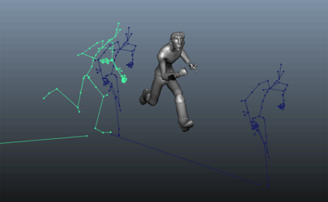
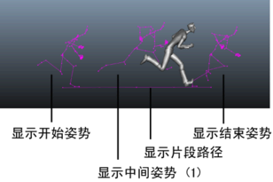

可以显示片段重影，片段重影表示 3D 空间中的片段动画，使您可以预览片段的轨迹并帮助您在片段之间手动匹配姿势。
显示片段重影
- 选择要显示为片段重影的对象，然后在“Trax 编辑器”(Trax Editor)菜单栏中选择“编辑 > 设置片段重影根”(Edit > Set Clip Ghost Root)。
在大多数情况下，角色层次的根节点是很好的供使用对象，因为它将角色的骨架显示为片段重影。
- 在片段上单击鼠标右键，然后选择“显示片段重影”(Show Clip Ghost)。
如果已显示重影，“显示片段重影”(Show Clip Ghost)选项会更改为“隐藏片段重影”(Hide Clip Ghost)。

默认情况下，片段重影将在场景中显示为一个 3D 线框，表示片段中的第一个姿势和最后一个姿势，并在它们之间绘制一条直线，以指示动画的轨迹。您可以更改片段重影显示，例如，在第一帧和最后一帧之间添加更多姿势。
更改片段重影的显示
- 在“大纲视图”(Outliner)中，为要修改重影的片段选择 clipGhostShape 节点。
注： 片段重影节点的名称基于“Trax 编辑器”(Trax Editor)中片段的名称。例如，如果为名为 FunnyWalk 的片段显示重影，则“大纲视图”(Outliner)中节点将被命名为 FunnyWalkClipGhostShape。
- 在“属性编辑器”(Attribute Editor)
clipGhostShape 选项卡中，按以下方式更改任意“片段重影形状属性”(Clip Ghost Shape Attributes)：
- 若要禁用第一个和最后一个姿势重影的显示，请禁用“显示开始姿势”(Show Start Pose)和“显示结束姿势”(Show End Pose)。
- 要显示其他片段姿势（除默认的第一个和最后一个帧以外），请启用“显示中间姿势”(Show Intermediate Poses)。在“中间姿势”(Intermediate Poses)字段中设置要显示的姿势的数量。
- 要禁用姿势之间显示的用于指示片段轨迹的线，请禁用“显示片段路径”(Show Clip Path)。
